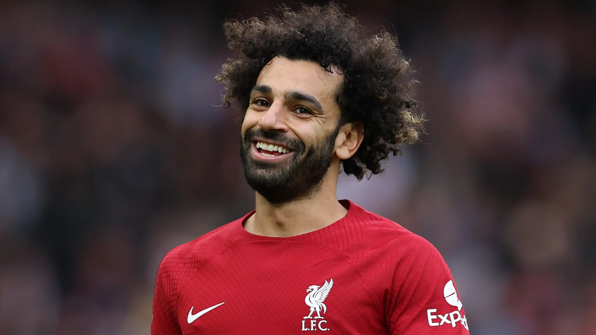

Liverpool Football Club is a professional football club based in Liverpool, England. The club competes in the Premier League, the top tier of English football. Founded in 1892, the club joined the Football League the following year and has played its home games at Anfield since its formation.
| Players | club playing period | Goals | Matches |
|---|---|---|---|
|
Ian Rush |
1988-1996 | 346 | 660 |
|
Steven Gerrard |
1998-2015 | 186 | 710 |
|

Mohamed Salah |
2017-Until now | 184 | 300 |
Liverpool played their first match on 1 September 1892, a pre-season friendly match against Rotherham Town, which they won 7–1. The team Liverpool fielded against Rotherham was composed entirely of Scottish players – the players who came from Scotland to play in England in those days were known as the Scotch Professors. Manager John McKenna had recruited the players after a scouting trip to Scotland – so they became known as the "team of Macs".[5] The team won the Lancashire League in its debut season and joined the Football League Second Division at the start of the 1893–94 season. After the club was promoted to the First Division in 1896, Tom Watson was appointed manager. He led Liverpool to its first league title in 1901, before winning it again in 1906. for more click here.
Anfield was built in 1884 on land adjacent to Stanley Park. Situated 2 miles (3 km) from Liverpool city centre, it was originally used by Everton before the club moved to Goodison Park after a dispute over rent with Anfield owner John Houlding.[67] Left with an empty ground, Houlding founded Liverpool in 1892 and the club has played at Anfield ever since. The capacity of the stadium at the time was 20,000, although only 100 spectators attended Liverpool's first match at Anfield.[68]